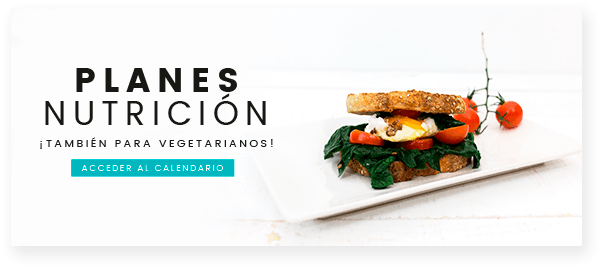
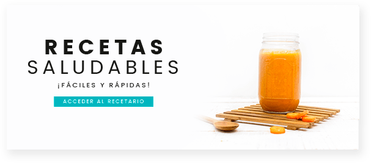

-------CUIDA TU ALIMENTACIÓN-------
Planificar las comidas es muy importante para poder seguir una buena alimentación. Si no las planificamos, luego compramos a ojo lo que necesitamos y acabamos comprando cosas innecesarias
Es importante tenerla bien organizada para poder comer de forma saludable. Y no solo la despensa, sino también el frigorífico y el congelador. ¡Te damos las claves de los alimentos que debes tener en cada sitio!
Realizando uno de estos calendarios, estaréis cumpliendo con un pilar importantísimo de los hábitos saludables, que es hacer actividad física más de 30 minutos al día.
 